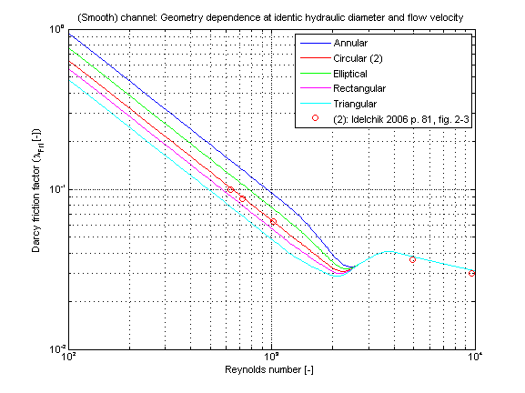

Modelica.Fluid.Dissipation.Utilities.SharedDocumentation.PressureLoss.Channel
Modelica.Fluid.Dissipation.Utilities.SharedDocumentation.PressureLoss.Channel
Modelica.Fluid.Dissipation.Utilities.SharedDocumentation.PressureLoss.Channel
| Name | Description |
|---|---|
Modelica.Fluid.Dissipation.Utilities.SharedDocumentation.PressureLoss.Channel.dp_internalFlowOverallCalculation of pressure loss for an internal flow through different geometries at overall flow regime for single-phase fluid flow considering surface roughness.
This function shall be used inside of the restricted limits according to the referenced literature.

The pressure loss dp for channels is determined by:
dp = zeta_TOT * (rho/2) * velocity^2
with
| rho | as density of fluid [kg/m3], |
| velocity | as mean velocity [m/s], |
| zeta_TOT | as pressure loss coefficient [-]. |
Channels with different shape of its cross sectional area are calculated according to [Miller 1978, p. 138, fig. 8.5-8-6]
The pressure loss of these channels is similar to its calculation in straight pipes. There are three different flow regimes observed (laminar,transition,turbulent). The pressure loss coefficient (zeta_TOT) of a channel is calculated in dependence of the flow regime as follows:
zeta_TOT = CF_lam/Re * (L/d_hyd)
Transition regime (Re_lam_leave ≤ 4e4)
This calculation is done using a smoothing function interpolating between the laminar and the turbulent flow regime.
Turbulent regime (Re ≥ 4e3):
The turbulent regime can be calculated with the pressure loss correlations for a straight pipe with the hydraulic diameter of the chosen geometry instead of the internal diameter of a straight pipe according to [VDI 2002, p. Lab 4, sec. 2.1] . The documentation of turbulent fluid flow for a straight pipe is shown in dp_turbulent.
with
| CF_lam | as correction factor considering the geometry for laminar regime [-], |
| L | as length of geometry perpendicular to cross sectional area [m], |
| d_hyd | as hydraulic diameter of geometry [m], |
| Re | as Reynolds number [-], |
| zeta_TOT | as pressure loss coefficient [-]. |
Note that the beginning of the laminar regime depends on the chosen surface roughness of the channel and cannot be beneath Re ≤ 1e3.
The Darcy friction factor (lambda_FRI) of a channel with different shapes of its cross sectional area are shown in dependence of the Reynolds number (Re) in the figures below.
The Darcy friction factor (lambda_FRI) for different geometries has been obtained at the same hydraulic diameter and the same mean velocity of the internal flow. Note that there is no difference of the Darcy friction factor in the turbulent regime if using the same hydraulic diameter for all geometries. Roughness can be considered but it is not used for this validation.
Extends from Modelica.Icons.Information (Icon for general information packages).